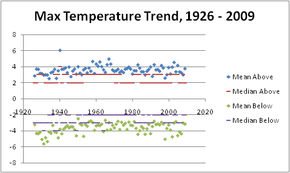
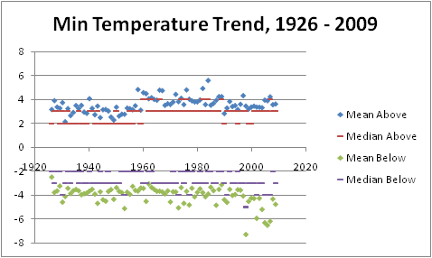
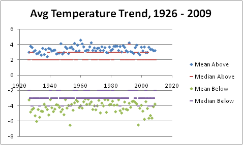

| Introduction | Milestones | Results | IT Resources |
This project was developed as part of an independent study with Dr. George Young of the Penn State Meteorology Department. The course goals were formulated in response to the increasing demand for information technology expertise in the weather risk management and operational weather forecasting industries. The structure of the course was comprised of milestones, which divide the project into manageable sections of achievement. These milestones focused on the Perl, Fortran, and Excel VBA languages, as well as HTML coding. The project objective was to raise the student's programmatic understanding to a functional level that can be immediately utilized in the meteorology industry.
The chosen application of the project was an investigation of the historical temperature trends with respect to their thirty-year normal values in State College, PA. This task facilitated learning Perl's ability to match and manipulate text data with regular expressions and gather such data automatically from the web, Fortran's lightning calculating speed and derived data types, and Excel VBA's macro recording and editing, data importing, and image exporting. The results of the analysis are provided graphically below, illustrating the mean and median run length of max, min, and average temperature above and below their thirty year normals.
| Milestone | Task | Code | Link |
| I | Download the data from the weather station web page, and save it to file. |
WWW::Mechanize module File creation/writing While flow control Regular Expressions |
|
| II | Format the data to be Fortran-friendly, and parse it to an array |
Fortran::Format module If/then construct Storage to array |
|
| III | Extend code to cover entire POR |
Date::Simple module List control |
|
| IV | Write a Fortran program to apply statistical analysis to the collected data |
Program: tdata Module: my_temps Subroutines: file2array, array2screen, tavgnorms, high_norm_runs, low_norm_runs, avg_norm_runs |
|
| V | Extend the program code to do graphical output of the results. | VBA in Excel |
|  |
Points of Interest:
|
|  |
Points of Interest:
|
|  |
Points of Interest:
|